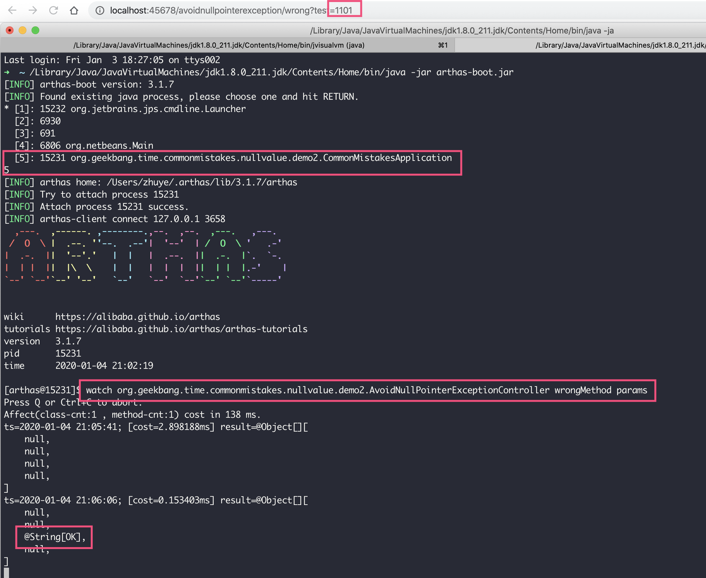
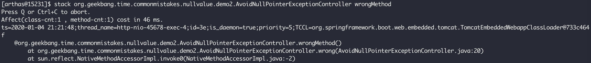
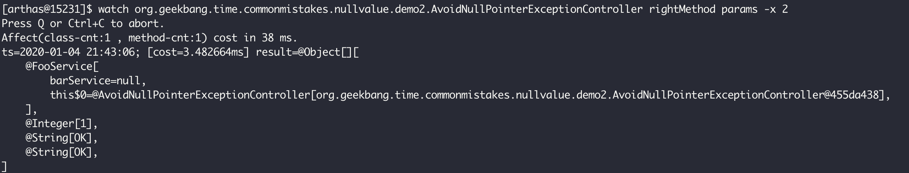
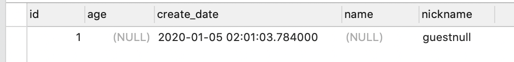
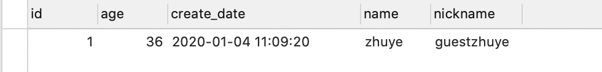

- 00 开篇词 业务代码真的会有这么多坑？.md.html
- 01 使用了并发工具类库，线程安全就高枕无忧了吗？.md.html
- 02 代码加锁：不要让“锁”事成为烦心事.md.html
- 03 线程池：业务代码最常用也最容易犯错的组件.md.html
- 04 连接池：别让连接池帮了倒忙.md.html
- 05 HTTP调用：你考虑到超时、重试、并发了吗？.md.html
- 06 2成的业务代码的Spring声明式事务，可能都没处理正确.md.html
- 07 数据库索引：索引并不是万能药.md.html
- 08 判等问题：程序里如何确定你就是你？.md.html
- 09 数值计算：注意精度、舍入和溢出问题.md.html
- 10 集合类：坑满地的List列表操作.md.html
- 11 空值处理：分不清楚的null和恼人的空指针.md.html
- 12 异常处理：别让自己在出问题的时候变为瞎子.md.html
- 13 日志：日志记录真没你想象的那么简单.md.html
- 14 文件IO：实现高效正确的文件读写并非易事.md.html
- 15 序列化：一来一回你还是原来的你吗？.md.html
- 16 用好Java 8的日期时间类，少踩一些“老三样”的坑.md.html
- 17 别以为“自动挡”就不可能出现OOM.md.html
- 18 当反射、注解和泛型遇到OOP时，会有哪些坑？.md.html
- 19 Spring框架：IoC和AOP是扩展的核心.md.html
- 20 Spring框架：框架帮我们做了很多工作也带来了复杂度.md.html
- 21 代码重复：搞定代码重复的三个绝招.md.html
- 22 接口设计：系统间对话的语言，一定要统一.md.html
- 23 缓存设计：缓存可以锦上添花也可以落井下石.md.html
- 24 业务代码写完，就意味着生产就绪了？.md.html
- 25 异步处理好用，但非常容易用错.md.html
- 26 数据存储：NoSQL与RDBMS如何取长补短、相辅相成？.md.html
- 27 数据源头：任何客户端的东西都不可信任.md.html
- 28 安全兜底：涉及钱时，必须考虑防刷、限量和防重.md.html
- 29 数据和代码：数据就是数据，代码就是代码.md.html
- 30 如何正确保存和传输敏感数据？.md.html
- 31 加餐1：带你吃透课程中Java 8的那些重要知识点（一）.md.html
- 32 加餐2：带你吃透课程中Java 8的那些重要知识点（二）.md.html
- 33 加餐3：定位应用问题，排错套路很重要.md.html
- 34 加餐4：分析定位Java问题，一定要用好这些工具（一）.md.html
- 35 加餐5：分析定位Java问题，一定要用好这些工具（二）.md.html
- 36 加餐6：这15年来，我是如何在工作中学习技术和英语的？.md.html
- 37 加餐7：程序员成长28计.md.html
- 38 加餐8：Java程序从虚拟机迁移到Kubernetes的一些坑.md.html
- 答疑篇：代码篇思考题集锦（一）.md.html
- 答疑篇：代码篇思考题集锦（三）.md.html
- 答疑篇：代码篇思考题集锦（二）.md.html
- 答疑篇：加餐篇思考题答案合集.md.html
- 答疑篇：安全篇思考题答案合集.md.html
- 答疑篇：设计篇思考题答案合集.md.html
- 结束语 写代码时，如何才能尽量避免踩坑？.md.html
- 捐赠
11 空值处理：分不清楚的null和恼人的空指针
今天，我要和你分享的主题是，空值处理：分不清楚的 null 和恼人的空指针。
有一天我收到一条短信，内容是“尊敬的 null 你好，XXX”。当时我就笑了，这是程序员都能 Get 的笑点，程序没有获取到我的姓名，然后把空格式化为了 null。很明显，这是没处理好 null。哪怕把 null 替换为贵宾、顾客，也不会引发这样的笑话。
程序中的变量是 null，就意味着它没有引用指向或者说没有指针。这时，我们对这个变量进行任何操作，都必然会引发空指针异常，在 Java 中就是 NullPointerException。那么，空指针异常容易在哪些情况下出现，又应该如何修复呢？
空指针异常虽然恼人但好在容易定位，更麻烦的是要弄清楚 null 的含义。比如，客户端给服务端的一个数据是 null，那么其意图到底是给一个空值，还是没提供值呢？再比如，数据库中字段的 NULL 值，是否有特殊的含义呢，针对数据库中的 NULL 值，写 SQL 需要特别注意什么呢？
今天，就让我们带着这些问题开始 null 的踩坑之旅吧。
修复和定位恼人的空指针问题
NullPointerException 是 Java 代码中最常见的异常，我将其最可能出现的场景归为以下 5 种：
参数值是 Integer 等包装类型，使用时因为自动拆箱出现了空指针异常；
字符串比较出现空指针异常；
诸如 ConcurrentHashMap 这样的容器不支持 Key 和 Value 为 null，强行 put null 的 Key 或 Value 会出现空指针异常；
A 对象包含了 B，在通过 A 对象的字段获得 B 之后，没有对字段判空就级联调用 B 的方法出现空指针异常；
方法或远程服务返回的 List 不是空而是 null，没有进行判空就直接调用 List 的方法出现空指针异常。
为模拟说明这 5 种场景，我写了一个 wrongMethod 方法，并用一个 wrong 方法来调用它。wrong 方法的入参 test 是一个由 0 和 1 构成的、长度为 4 的字符串，第几位设置为 1 就代表第几个参数为 null，用来控制 wrongMethod 方法的 4 个入参，以模拟各种空指针情况：
private List<String> wrongMethod(FooService fooService, Integer i, String s, String t) {
log.info("result {} {} {} {}", i + 1, s.equals("OK"), s.equals(t),
new ConcurrentHashMap<String, String>().put(null, null));
if (fooService.getBarService().bar().equals("OK"))
log.info("OK");
return null;
}
@GetMapping("wrong")
public int wrong(@RequestParam(value = "test", defaultValue = "1111") String test) {
return wrongMethod(test.charAt(0) == '1' ? null : new FooService(),
test.charAt(1) == '1' ? null : 1,
test.charAt(2) == '1' ? null : "OK",
test.charAt(3) == '1' ? null : "OK").size();
}
class FooService {
@Getter
private BarService barService;
}
class BarService {
String bar() {
return "OK";
}
}
很明显，这个案例出现空指针异常是因为变量是一个空指针，尝试获得变量的值或访问变量的成员会获得空指针异常。但，这个异常的定位比较麻烦。
在测试方法 wrongMethod 中，我们通过一行日志记录的操作，在一行代码中模拟了 4 处空指针异常：
对入参 Integer i 进行 +1 操作；
对入参 String s 进行比较操作，判断内容是否等于”OK”；
对入参 String s 和入参 String t 进行比较操作，判断两者是否相等；
对 new 出来的 ConcurrentHashMap 进行 put 操作，Key 和 Value 都设置为 null。
输出的异常信息如下：
java.lang.NullPointerException: null
at org.geekbang.time.commonmistakes.nullvalue.demo2.AvoidNullPointerExceptionController.wrongMethod(AvoidNullPointerExceptionController.java:37)
at org.geekbang.time.commonmistakes.nullvalue.demo2.AvoidNullPointerExceptionController.wrong(AvoidNullPointerExceptionController.java:20)
这段信息确实提示了这行代码出现了空指针异常，但我们很难定位出到底是哪里出现了空指针，可能是把入参 Integer 拆箱为 int 的时候出现的，也可能是入参的两个字符串任意一个为 null，也可能是因为把 null 加入了 ConcurrentHashMap。
你可能会想到，要排查这样的问题，只要设置一个断点看一下入参即可。但，在真实的业务场景中，空指针问题往往是在特定的入参和代码分支下才会出现，本地难以重现。如果要排查生产上出现的空指针问题，设置代码断点不现实，通常是要么把代码进行拆分，要么增加更多的日志，但都比较麻烦。
在这里，我推荐使用阿里开源的 Java 故障诊断神器Arthas。Arthas 简单易用功能强大，可以定位出大多数的 Java 生产问题。
接下来，我就和你演示下如何在 30 秒内知道 wrongMethod 方法的入参，从而定位到空指针到底是哪个入参引起的。如下截图中有三个红框，我先和你分析第二和第三个红框：
第二个红框表示，Arthas 启动后被附加到了 JVM 进程；
第三个红框表示，通过 watch 命令监控 wrongMethod 方法的入参。

watch 命令的参数包括类名表达式、方法表达式和观察表达式。这里，我们设置观察类为 AvoidNullPointerExceptionController，观察方法为 wrongMethod，观察表达式为 params 表示观察入参：
watch org.geekbang.time.commonmistakes.nullvalue.demo2.AvoidNullPointerExceptionController wrongMethod params
开启 watch 后，执行 2 次 wrong 方法分别设置 test 入参为 1111 和 1101，也就是第一次传入 wrongMethod 的 4 个参数都为 null，第二次传入的第 1、2 和 4 个参数为 null。
配合图中第一和第四个红框可以看到，第二次调用时，第三个参数是字符串 OK 其他参数是 null，Archas 正确输出了方法的所有入参，这样我们很容易就能定位到空指针的问题了。
到这里，如果是简单的业务逻辑的话，你就可以定位到空指针异常了；如果是分支复杂的业务逻辑，你需要再借助 stack 命令来查看 wrongMethod 方法的调用栈，并配合 watch 命令查看各方法的入参，就可以很方便地定位到空指针的根源了。
下图演示了通过 stack 命令观察 wrongMethod 的调用路径：

如果你想了解 Arthas 各种命令的详细使用方法，可以点击这里查看。
接下来，我们看看如何修复上面出现的 5 种空指针异常。
其实，对于任何空指针异常的处理，最直白的方式是先判空后操作。不过，这只能让异常不再出现，我们还是要找到程序逻辑中出现的空指针究竟是来源于入参还是 Bug：
如果是来源于入参，还要进一步分析入参是否合理等；
如果是来源于 Bug，那空指针不一定是纯粹的程序 Bug，可能还涉及业务属性和接口调用规范等。
在这里，因为是 Demo，所以我们只考虑纯粹的空指针判空这种修复方式。如果要先判空后处理，大多数人会想到使用 if-else 代码块。但，这种方式既增加代码量又会降低易读性，我们可以尝试利用 Java 8 的 Optional 类来消除这样的 if-else 逻辑，使用一行代码进行判空和处理。
修复思路如下：
对于 Integer 的判空，可以使用 Optional.ofNullable 来构造一个 Optional，然后使用 orElse(0) 把 null 替换为默认值再进行 +1 操作。
对于 String 和字面量的比较，可以把字面量放在前面，比如”OK”.equals(s)，这样即使 s 是 null 也不会出现空指针异常；而对于两个可能为 null 的字符串变量的 equals 比较，可以使用 Objects.equals，它会做判空处理。
对于 ConcurrentHashMap，既然其 Key 和 Value 都不支持 null，修复方式就是不要把 null 存进去。HashMap 的 Key 和 Value 可以存入 null，而 ConcurrentHashMap 看似是 HashMap 的线程安全版本，却不支持 null 值的 Key 和 Value，这是容易产生误区的一个地方。
对于类似 fooService.getBarService().bar().equals(“OK”) 的级联调用，需要判空的地方有很多，包括 fooService、getBarService() 方法的返回值，以及 bar 方法返回的字符串。如果使用 if-else 来判空的话可能需要好几行代码，但使用 Optional 的话一行代码就够了。
对于 rightMethod 返回的 List，由于不能确认其是否为 null，所以在调用 size 方法获得列表大小之前，同样可以使用 Optional.ofNullable 包装一下返回值，然后通过.orElse(Collections.emptyList()) 实现在 List 为 null 的时候获得一个空的 List，最后再调用 size 方法。
private List<String> rightMethod(FooService fooService, Integer i, String s, String t) {
log.info("result {} {} {} {}", Optional.ofNullable(i).orElse(0) + 1, "OK".equals(s), Objects.equals(s, t), new HashMap<String, String>().put(null, null));
Optional.ofNullable(fooService)
.map(FooService::getBarService)
.filter(barService -> "OK".equals(barService.bar()))
.ifPresent(result -> log.info("OK"));
return new ArrayList<>();
}
@GetMapping("right")
public int right(@RequestParam(value = "test", defaultValue = "1111") String test) {
return Optional.ofNullable(rightMethod(test.charAt(0) == '1' ? null : new FooService(),
test.charAt(1) == '1' ? null : 1,
test.charAt(2) == '1' ? null : "OK",
test.charAt(3) == '1' ? null : "OK"))
.orElse(Collections.emptyList()).size();
}
经过修复后，调用 right 方法传入 1111，也就是给 rightMethod 的 4 个参数都设置为 null，日志中也看不到任何空指针异常了：
[21:43:40.619] [http-nio-45678-exec-2] [INFO ] [.AvoidNullPointerExceptionController:45 ] - result 1 false true null
但是，如果我们修改 right 方法入参为 0000，即传给 rightMethod 方法的 4 个参数都不可能是 null，最后日志中也无法出现 OK 字样。这又是为什么呢，BarService 的 bar 方法不是返回了 OK 字符串吗？
我们还是用 Arthas 来定位问题，使用 watch 命令来观察方法 rightMethod 的入参，-x 参数设置为 2 代表参数打印的深度为 2 层：

可以看到，FooService 中的 barService 字段为 null，这样也就可以理解为什么最终出现这个 Bug 了。
这又引申出一个问题，使用判空方式或 Optional 方式来避免出现空指针异常，不一定是解决问题的最好方式，空指针没出现可能隐藏了更深的 Bug。因此，解决空指针异常，还是要真正 case by case 地定位分析案例，然后再去做判空处理，而处理时也并不只是判断非空然后进行正常业务流程这么简单，同样需要考虑为空的时候是应该出异常、设默认值还是记录日志等。
POJO 中属性的 null 到底代表了什么？
在我看来，相比判空避免空指针异常，更容易出错的是 null 的定位问题。对程序来说，null 就是指针没有任何指向，而结合业务逻辑情况就复杂得多，我们需要考虑：
DTO 中字段的 null 到底意味着什么？是客户端没有传给我们这个信息吗？
既然空指针问题很讨厌，那么 DTO 中的字段要设置默认值么？
如果数据库实体中的字段有 null，那么通过数据访问框架保存数据是否会覆盖数据库中的既有数据？
如果不能明确地回答这些问题，那么写出的程序逻辑很可能会混乱不堪。接下来，我们看一个实际案例吧。
有一个 User 的 POJO，同时扮演 DTO 和数据库 Entity 角色，包含用户 ID、姓名、昵称、年龄、注册时间等属性：
@Data
@Entity
public class User {
@Id
@GeneratedValue(strategy = IDENTITY)
private Long id;
private String name;
private String nickname;
private Integer age;
private Date createDate = new Date();
}
有一个 Post 接口用于更新用户数据，更新逻辑非常简单，根据用户姓名自动设置一个昵称，昵称的规则是“用户类型 + 姓名”，然后直接把客户端在 RequestBody 中使用 JSON 传过来的 User 对象通过 JPA 更新到数据库中，最后返回保存到数据库的数据。
@Autowired
private UserRepository userRepository;
@PostMapping("wrong")
public User wrong(@RequestBody User user) {
user.setNickname(String.format("guest%s", user.getName()));
return userRepository.save(user);
}
@Repository
public interface UserRepository extends JpaRepository<User, Long> {
}
首先，在数据库中初始化一个用户，age=36、name=zhuye、create_date=2020 年 1 月 4 日、nickname 是 NULL：

然后，使用 cURL 测试一下用户信息更新接口 Post，传入一个 id=1、name=null 的 JSON 字符串，期望把 ID 为 1 的用户姓名设置为空：
curl -H "Content-Type:application/json" -X POST -d '{ "id":1, "name":null}' http://localhost:45678/pojonull/wrong
{"id":1,"name":null,"nickname":"guestnull","age":null,"createDate":"2020-01-05T02:01:03.784+0000"}%
接口返回的结果和数据库中记录一致：

可以看到，这里存在如下三个问题：
调用方只希望重置用户名，但 age 也被设置为了 null；
nickname 是用户类型加姓名，name 重置为 null 的话，访客用户的昵称应该是 guest，而不是 guestnull，重现了文首提到的那个笑点；
用户的创建时间原来是 1 月 4 日，更新了用户信息后变为了 1 月 5 日。
归根结底，这是如下 5 个方面的问题：
明确 DTO 中 null 的含义。对于 JSON 到 DTO 的反序列化过程，null 的表达是有歧义的，客户端不传某个属性，或者传 null，这个属性在 DTO 中都是 null。但，对于用户信息更新操作，不传意味着客户端不需要更新这个属性，维持数据库原先的值；传了 null，意味着客户端希望重置这个属性。因为 Java 中的 null 就是没有这个数据，无法区分这两种表达，所以本例中的 age 属性也被设置为了 null，或许我们可以借助 Optional 来解决这个问题。
POJO 中的字段有默认值。如果客户端不传值，就会赋值为默认值，导致创建时间也被更新到了数据库中。
注意字符串格式化时可能会把 null 值格式化为 null 字符串。比如昵称的设置，我们只是进行了简单的字符串格式化，存入数据库变为了 guestnull。显然，这是不合理的，也是开头我们说的笑话的来源，还需要进行判断。
DTO 和 Entity 共用了一个 POJO。对于用户昵称的设置是程序控制的，我们不应该把它们暴露在 DTO 中，否则很容易把客户端随意设置的值更新到数据库中。此外，创建时间最好让数据库设置为当前时间，不用程序控制，可以通过在字段上设置 columnDefinition 来实现。
数据库字段允许保存 null，会进一步增加出错的可能性和复杂度。因为如果数据真正落地的时候也支持 NULL 的话，可能就有 NULL、空字符串和字符串 null 三种状态。这一点我会在下一小节展开。如果所有属性都有默认值，问题会简单一点。
按照这个思路，我们对 DTO 和 Entity 进行拆分，修改后代码如下所示：
UserDto 中只保留 id、name 和 age 三个属性，且 name 和 age 使用 Optional 来包装，以区分客户端不传数据还是故意传 null。
在 UserEntity 的字段上使用 @Column 注解，把数据库字段 name、nickname、age 和 createDate 都设置为 NOT NULL，并设置 createDate 的默认值为 CURRENT_TIMESTAMP，由数据库来生成创建时间。
使用 Hibernate 的 @DynamicUpdate 注解实现更新 SQL 的动态生成，实现只更新修改后的字段，不过需要先查询一次实体，让 Hibernate 可以“跟踪”实体属性的当前状态，以确保有效。
@Data
public class UserDto {
private Long id;
private Optional<String> name;
private Optional<Integer> age;
;
@Data
@Entity
@DynamicUpdate
public class UserEntity {
@Id
@GeneratedValue(strategy = IDENTITY)
private Long id;
@Column(nullable = false)
private String name;
@Column(nullable = false)
private String nickname;
@Column(nullable = false)
private Integer age;
@Column(nullable = false, columnDefinition = "TIMESTAMP DEFAULT CURRENT_TIMESTAMP")
private Date createDate;
}
在重构了 DTO 和 Entity 后，我们重新定义一个 right 接口，以便对更新操作进行更精细化的处理。首先是参数校验：
对传入的 UserDto 和 ID 属性先判空，如果为空直接抛出 IllegalArgumentException。
根据 id 从数据库中查询出实体后进行判空，如果为空直接抛出 IllegalArgumentException。
然后，由于 DTO 中已经巧妙使用了 Optional 来区分客户端不传值和传 null 值，那么业务逻辑实现上就可以按照客户端的意图来分别实现逻辑。如果不传值，那么 Optional 本身为 null，直接跳过 Entity 字段的更新即可，这样动态生成的 SQL 就不会包含这个列；如果传了值，那么进一步判断传的是不是 null。
下面，我们根据业务需要分别对姓名、年龄和昵称进行更新：
对于姓名，我们认为客户端传 null 是希望把姓名重置为空，允许这样的操作，使用 Optional 的 orElse 方法一键把空转换为空字符串即可。
对于年龄，我们认为如果客户端希望更新年龄就必须传一个有效的年龄，年龄不存在重置操作，可以使用 Optional 的 orElseThrow 方法在值为空的时候抛出 IllegalArgumentException。
对于昵称，因为数据库中姓名不可能为 null，所以可以放心地把昵称设置为 guest 加上数据库取出来的姓名。
@PostMapping("right")
public UserEntity right(@RequestBody UserDto user) {
if (user == null || user.getId() == null)
throw new IllegalArgumentException("用户Id不能为空");
UserEntity userEntity = userEntityRepository.findById(user.getId())
.orElseThrow(() -> new IllegalArgumentException("用户不存在"));
if (user.getName() != null) {
userEntity.setName(user.getName().orElse(""));
}
userEntity.setNickname("guest" + userEntity.getName());
if (user.getAge() != null) {
userEntity.setAge(user.getAge().orElseThrow(() -> new IllegalArgumentException("年龄不能为空")));
}
return userEntityRepository.save(userEntity);
}
假设数据库中已经有这么一条记录，id=1、age=36、create_date=2020 年 1 月 4 日、name=zhuye、nickname=guestzhuye：

使用相同的参数调用 right 接口，再来试试是否解决了所有问题。传入一个 id=1、name=null 的 JSON 字符串，期望把 id 为 1 的用户姓名设置为空：
curl -H "Content-Type:application/json" -X POST -d '{ "id":1, "name":null}' http://localhost:45678/pojonull/right
{"id":1,"name":"","nickname":"guest","age":36,"createDate":"2020-01-04T11:09:20.000+0000"}%
结果如下：

可以看到，right 接口完美实现了仅重置 name 属性的操作，昵称也不再有 null 字符串，年龄和创建时间字段也没被修改。
通过日志可以看到，Hibernate 生成的 SQL 语句只更新了 name 和 nickname 两个字段：
Hibernate: update user_entity set name=?, nickname=? where id=?
接下来，为了测试使用 Optional 是否可以有效区分 JSON 中没传属性还是传了 null，我们在 JSON 中设置了一个 null 的 age，结果是正确得到了年龄不能为空的错误提示：
curl -H "Content-Type:application/json" -X POST -d '{ "id":1, "age":null}' http://localhost:45678/pojonull/right
{"timestamp":"2020-01-05T03:14:40.324+0000","status":500,"error":"Internal Server Error","message":"年龄不能为空","path":"/pojonull/right"}%
小心 MySQL 中有关 NULL 的三个坑
前面提到，数据库表字段允许存 NULL 除了会让我们困惑外，还容易有坑。这里我会结合 NULL 字段，和你着重说明 sum 函数、count 函数，以及 NULL 值条件可能踩的坑。
为方便演示，首先定义一个只有 id 和 score 两个字段的实体：
@Entity
@Data
public class User {
@Id
@GeneratedValue(strategy = IDENTITY)
private Long id;
private Long score;
}
程序启动的时候，往实体初始化一条数据，其 id 是自增列自动设置的 1，score 是 NULL：
@Autowired
private UserRepository userRepository;
@PostConstruct
public void init() {
userRepository.save(new User());
}
然后，测试下面三个用例，来看看结合数据库中的 null 值可能会出现的坑：
通过 sum 函数统计一个只有 NULL 值的列的总和，比如 SUM(score)；
select 记录数量，count 使用一个允许 NULL 的字段，比如 COUNT(score)；
使用 =NULL 条件查询字段值为 NULL 的记录，比如 score=null 条件。
@Repository
public interface UserRepository extends JpaRepository<User, Long> {
@Query(nativeQuery=true,value = "SELECT SUM(score) FROM `user`")
Long wrong1();
@Query(nativeQuery = true, value = "SELECT COUNT(score) FROM `user`")
Long wrong2();
@Query(nativeQuery = true, value = "SELECT * FROM `user` WHERE score=null")
List<User> wrong3();
}
得到的结果，分别是 null、0 和空 List：
[11:38:50.137] [http-nio-45678-exec-1] [INFO ] [t.c.nullvalue.demo3.DbNullController:26 ] - result: null 0 []
显然，这三条 SQL 语句的执行结果和我们的期望不同：
虽然记录的 score 都是 NULL，但 sum 的结果应该是 0 才对；
虽然这条记录的 score 是 NULL，但记录总数应该是 1 才对；
使用 =NULL 并没有查询到 id=1 的记录，查询条件失效。
原因是：
MySQL 中 sum 函数没统计到任何记录时，会返回 null 而不是 0，可以使用 IFNULL 函数把 null 转换为 0；
MySQL 中 count 字段不统计 null 值，COUNT(*) 才是统计所有记录数量的正确方式。
MySQL 中使用诸如 =、<、> 这样的算数比较操作符比较 NULL 的结果总是 NULL，这种比较就显得没有任何意义，需要使用 IS NULL、IS NOT NULL 或 ISNULL() 函数来比较。
修改一下 SQL：
@Query(nativeQuery = true, value = "SELECT IFNULL(SUM(score),0) FROM `user`")
Long right1();
@Query(nativeQuery = true, value = "SELECT COUNT(*) FROM `user`")
Long right2();
@Query(nativeQuery = true, value = "SELECT * FROM `user` WHERE score IS NULL")
List<User> right3();
可以得到三个正确结果，分别为 0、1、[User(id=1, score=null)] ：
[14:50:35.768] [http-nio-45678-exec-1] [INFO ] [t.c.nullvalue.demo3.DbNullController:31 ] - result: 0 1 [User(id=1, score=null)]
重点回顾
今天，我和你讨论了做好空值处理需要注意的几个问题。
我首先总结了业务代码中 5 种最容易出现空指针异常的写法，以及相应的修复方式。针对判空，通过 Optional 配合 Stream 可以避免大多数冗长的 if-else 判空逻辑，实现一行代码优雅判空。另外，要定位和修复空指针异常，除了可以通过增加日志进行排查外，在生产上使用 Arthas 来查看方法的调用栈和入参会更快捷。
在我看来，业务系统最基本的标准是不能出现未处理的空指针异常，因为它往往代表了业务逻辑的中断，所以我建议每天查询一次生产日志来排查空指针异常，有条件的话建议订阅空指针异常报警，以便及时发现及时处理。
POJO 中字段的 null 定位，从服务端的角度往往很难分清楚，到底是客户端希望忽略这个字段还是有意传了 null，因此我们尝试用 Optional类来区分 null 的定位。同时，为避免把空值更新到数据库中，可以实现动态 SQL，只更新必要的字段。
最后，我分享了数据库字段使用 NULL 可能会带来的三个坑（包括 sum 函数、count 函数，以及 NULL 值条件），以及解决方式。
总结来讲，null 的正确处理以及避免空指针异常，绝不是判空这么简单，还要根据业务属性从前到后仔细考虑，客户端传入的 null 代表了什么，出现了 null 是否允许使用默认值替代，入库的时候应该传入 null 还是空值，并确保整个逻辑处理的一致性，才能尽量避免 Bug。
为处理好 null，作为客户端的开发者，需要和服务端对齐字段 null 的含义以及降级逻辑；而作为服务端的开发者，需要对入参进行前置判断，提前挡掉服务端不可接受的空值，同时在整个业务逻辑过程中进行完善的空值处理。
今天用到的代码，我都放在了 GitHub 上，你可以点击这个链接查看。
思考与讨论
ConcurrentHashMap 的 Key 和 Value 都不能为 null，而 HashMap 却可以，你知道这么设计的原因是什么吗？TreeMap、Hashtable 等 Map 的 Key 和 Value 是否支持 null 呢？
对于 Hibernate 框架可以使用 @DynamicUpdate 注解实现字段的动态更新，对于 MyBatis 框架如何实现类似的动态 SQL 功能，实现插入和修改 SQL 只包含 POJO 中的非空字段？
关于程序和数据库中的 null、空指针问题，你还遇到过什么坑吗？我是朱晔，欢迎在评论区与我留言分享，也欢迎你把这篇文章分享给你的朋友或同事，一起交流。
© 2019 - 2023 Liangliang Lee. Powered by gin and hexo-theme-book.